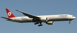

Resor · 2010-10-05 @ 10:54:25 Allmänt Permalink
4 okt Istanbul


Rookie mistake! Jodå, jag visste det. Allt om det, verkligen rett ut det där med var man köper på tax free. Man gör det på transitstället! Om man inte är säker på att en plomberad påse godkänns vid bytet. Men, nej då, jag knallar iväg från ARN Tax Free med en pava gin i näven.
Icke sa nicke ta med på flyget till BKK från Istanbul, men dröm om min förvåning när jag faktiskt hittar någon snäll (livsfarlig?) som tar med mig in på toaletterna och hyggligt plomberar min gin med IST Tax Free påse :-) Skrämmande, men just nu kul för mig. Och det är ju bara gin i flaskan, så.
Annars satt jag där på A320-200 i mitt exitsäte och försökte, på order av reptilhjärnan få ögonkontakt med Flygvärdinnan (med stor bokstav), ser mig runt och ser oss sitta där, en rad med 5 medelålders gråa herrar i vita skjortor. Sött! De skulle på nått bussinessmöte i Georgien. Prövar tomatjos, prövar även att skriva jos, svårt. Men vill hitta nått att dricka som är lite kul utan alkohol. Tomatjuice, "kul", nja.
Snett bakom sitter två svenskor med ett öronbedövande skratt, *aj*. Har det en funktion, ska man höras så andra uppmärksammar en? Som när man pratar högt på stockholmska när man är ute och reser i landet, så alla fattar att man är från stan. Tänker på påfåglar. Måsar mer kanske? ..tanken på måsarna får mig att le lite för mig själv.
Jag gillar fortfarande start och landning, men jösses vad de får slita däremellan kabinpersonalen. Mat ut, dricka ut, mat in, kaffe ut, skräp in och i högt tempo i ett trångt utrymme, osedvanligt varmt var det också.
Gate 208 boarding ☺